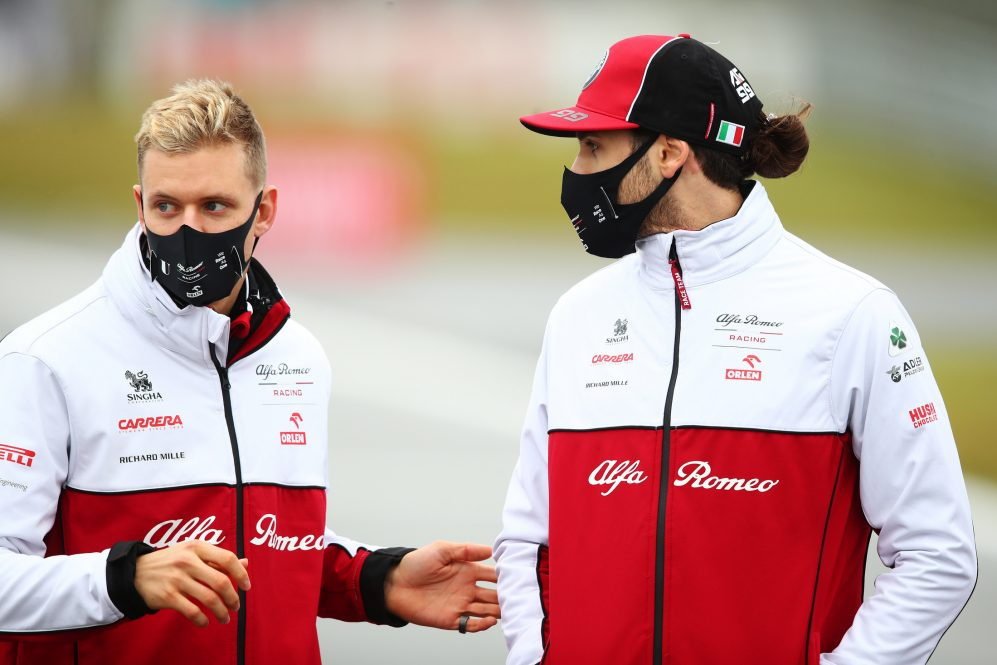
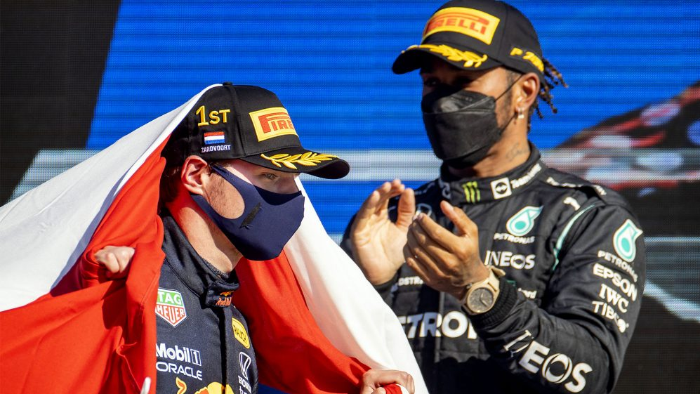
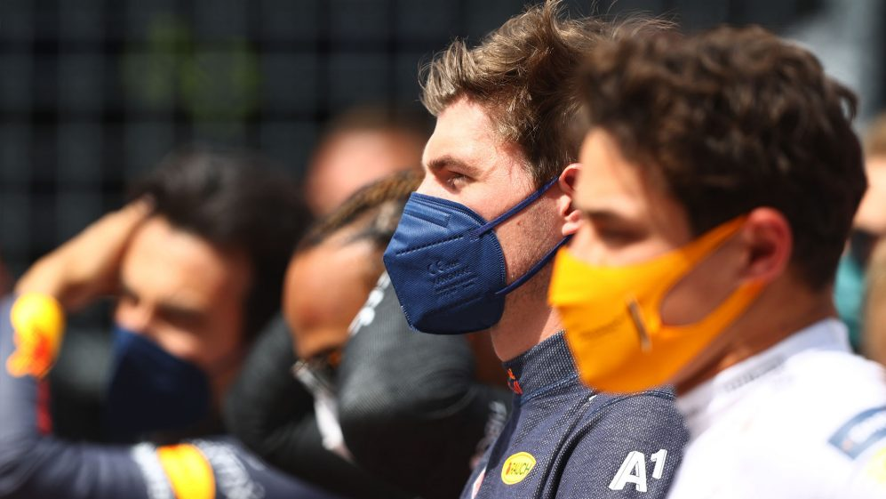

NEWS
Norris reveals why 2021 was his best year in F1 – and how Ferrari fight has sharpened focus for 2022
McLaren’s Lando Norris is gearing up for his fourth full Formula 1 season, and said the experience of fighting Ferrari in 2021 has put him in a prime position to battle towards the front of the field in 2022. More...

Schumacher and Giovinazzi to fulfil Ferrari reserve role in 2022
Mick Schumacher could find himself driving a Ferrari Formula 1 car in 2022 as Team Principal Mattia Binotto revealed the Haas race driver will share the reserve role with fellow Ferrari Driver Academy racer Antonio Giovinazzi… More...

HAMILTON VS VERSTAPPEN: Why their rivalry has the potential to be the greatest in F1 history
Sports comprise networks of rivalries. F1 is no exception, with the ever-shifting sands of battles between drivers and teams creating new and engaging storylines every season. But sometimes, a rivalry forms that towers above the rest, defining not just F1 in that era, but becoming a defining battle in sport as a whole. More...

Ferrari set to open talks with Sainz regarding post-2022 contract extension
Ferrari are set to begin talks with Carlos Sainz regarding a contract extension, after the Spaniard’s impressive debut season with the Italian squad. More...

2022 F1 GRID – All the drivers and teams racing this season
brand-new set of rules mean brand-new cars for 20 drivers on the F1 grid, with changes at Alfa Romeo and Mercedes plus one rookie. Here is how the 2022 F1 grid will line up. More...